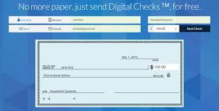

As,the physical cheque clearance system is a very time consuming process....
So to reduce this time consuming process this project will provide....
It is the alternate of the physical cheque in this we can make cheque anywhere at any time. without any pen and paper.
this is the alternate of the physical cheque drop box. this avoid the time taking ptocess of cheque droping....